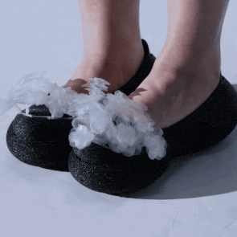
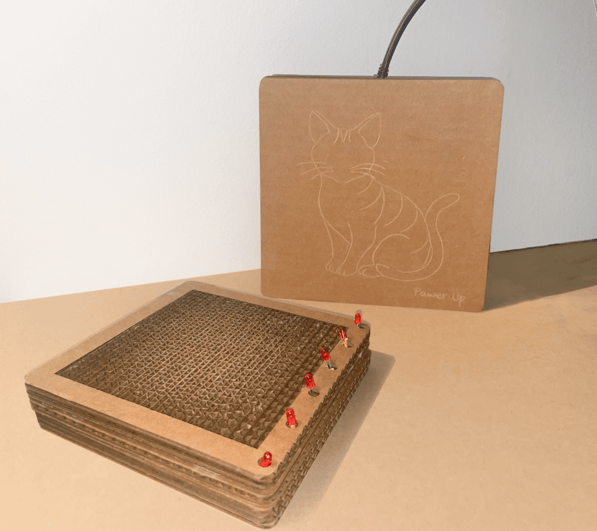

.gif)






Designer,
Researcher,
Maker.
Hi, I'm Thea — a designer, researcher, and maker based in Toronto, working at the blurred edge of fashion and wearable technology.
My practice lives at the intersection of soft robotics, wearable technology, and the body. I work to make technology invisible, so that what becomes visible is the body itself — its rhythms, pressures, and involuntary signals rendered as morphological change in soft materials. I'm interested in wearables that feel like garments rather than gadgets, and that respond to the wearer rather than display them to others.
I came to this work through footwear design and a year inside the fashion industry — looking for a way of putting craft, technology, and the body together that empowers the person wearing the work, rather than the system selling it.
I recently completed my MDes in Digital Futures at OCAD University, advised by Kate Hartman and Nicholas Puckett. I'm currently exploring opportunities in design research and wearable tech that take critical wearables seriously.
Technical Skills
- ESP32-S3, QT Py, Arduino
- Biometric sensors (HRV, EMG, pressure)
- Circuit design & soldering
- Soft robotics & pneumatics
- TPU heat-sealing (novel method)
- 3D printing, G-code modification
- C/C++, Python, Arduino IDE
Design & Research
- Fusion 360, Rhino, Blender
- Figma, Adobe Creative Suite
- Couture sewing & pattern making
- UX research & usability testing
- Technical documentation
- System architecture mapping
Exhibitions
- DFX Thesis Exhibition, 2026
- df open show, 2024 & 2025
- SITE Gallery, 2022
- SAIC BFA Show, 2022
- SAIC Fashion Show, 2022
Awards
- Dr. Sara Diamond Scholarship
- OCAD U Graduate Scholarship
- SAIC Body Builder Time Award
- SAIC Creative Honors Scholarship
Education
- MDes Digital Futures, OCAD U, 2026
- BFA Fashion Design, SAIC, 2022
- Google UX Design Certificate, 2023
Contact
- thealujx@gmail.com
- Toronto, Canada
- English (fluent) · Mandarin (native)
Passion Archive
3D printed pots and tools designed for my tropical plant collection — where digital fabrication meets living things.